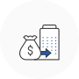

구조개선전용자금


 부실징후 중소기업에게 필요한 자금을 지원하여 조기 정상화 및 재도약을 지원하는 사업입니다.
융자대상
다음 중 1가지 이상의 요건을 충족하는 기업
* <2.공통사항> 바. 융자제한기업 중 ①항, ②항, ⑦항, ⑨항 적용에서 제외(단, ①항은 세금체납 처분 유예에 한함, ②항 중 금융질서문란, 청산절차 등록기업은 융자제한)
- 은행권 추천 경영애로 기업 중 아래에 해당되는 기업
* 은행의 기업신용위험평가 결과 경영정상화 가능기업(A,B,C 등급)
* 은행권 자체 프로그램에 의한 워크아웃 추진기업
* 자산건전성 분류 기준 ‘요주의’ 등급 이하
* 3년 연속 영업현금흐름(-)
* 3년 연속 이자보상배율 1 미만 - 정책금융기관 지정 경영애로 기업
* 중진공, 신용보증기금, 기술보증기금이 부실징후기업으로 지정한 중소기업
- 채권은행협의회 운영협약 또는 기업구조조정 촉진법에 의한 워크아웃 추진 중소기업
- 한국신용정보원의 “일반신용정보관리규약”에 따라 연체, 대위변제‧대지급, 부도, 관련인 정보가 등록되어 있는 기업 중 강력한 자구노력(자산매각, 대주주 감자 등) 추진기업
- 「채무자 회생 및 파산에 관한 법률」에 따른 회생절차 인가 기업(회생절차 종결 후 3년 이내 기업 포함)
- 진로제시 컨설팅 결과 ‘구조개선’ 대상으로 판정된 기업
- 한국자산관리공사에서 단기적 자금애로 등으로 금융지원이 필요하다고 추천한 국세 물납 법인
- ‘선제적 자율구조개선프로그램’에서 지원을 결정한 기업
사업내용
-
융자범위 : 경영애로 해소 및 경영정상화에 소요되는 운전자금
* 기업회생인가 기업 중 무리한 회생 인가 조건으로 어려움을 겪는 기업의 경우 회생채무 상환 비용 지원 가능
- 대출금리 : 정책자금 기준금리(변동)
- 대출기간 : 5년 이내(거치기간 2년 이내 포함)
- 융자방식 : 중진공 직접대출
- 대출한도 : 연간 10억원 (3년간 10억원 이내)
지원절차
- 정책자금 융자절차를 따름
융자상담처
더욱 자세한 상담은 전국에 위치한 중진공 각 지역본(지)부로 문의하여 주시기 바랍니다.